Individual Assignments
What do I do?
In this assignment, you will find two user interface examples around you, one that you think has good usability and one that you think has bad usability. Examples don't have to be graphical user interfaces: they can be smartphone apps, websites, bathroom signs, cafe menus, car dashboards, etc. Make sure to avoid analyzing the entire service or app, but focus on particular parts of the interface that you think have noteworthy usability issues. Also, most interfaces will have good and bad aspects at the same time, so feel free to cover both sides in your analysis. But for each example, make your final decision about whether it's a good (hall of fame) or bad (hall of shame) example overall.Why do I do this?
We designed this assignment to give you an opportunity to (1) make observations on various user interfaces around you, and (2) apply the usability dimensions covered in class to real-world examples. You'll practice analyzing interfaces with a usability perspective. We'll feature some of the best examples from this assignment in class, and give you credit!Your report
For each example, please report the following:- Hall of fame or shame?
- One-line description of what it is
- Where can it be found? (e.g., physical location, URL, name of the app)
- How did you find it? You shouldn't Google "UI hall of fame or shame" and copy examples from these databases. Please find your own examples.
- Analyze its usability using the dimensions covered in class: learnability, efficiency, and safety. Please feel free to discuss additional dimensions that you think are important for your example.
- Screenshots and photos to effectively support your analysis
Grading
- Completeness (20%): Cover all major usability dimensions, and include all the required components listed above in your report.
- Depth (20%): Include thoughtful analysis of usability, beyond surface level observations.
- Clarity (20%): The reader who sees the example for the first time should not struggle to understand your points.
- Visual Communication (20%): Use visual materials effectively to communicate your idea. Add annotations and labels to refer to specific elements in an image. Include zoom-in images if needed. Make sure your text and accompanying visuals complement each other.
- Conciseness (20%): Adhere to the word limit, and avoid being verbose in the description.
How do I submit?
Make a single PDF file of your report, and submit it on KLMS. Please ask questions about the assignment on Piazza.Intro
How many capitals of countries do you know? Throughout three programming assignments, we will build a simple quiz game with various countries and their capitals. For PR1, we will design a layout of the game using HTML / CSS.Where to start from?
We provide you with the starter kit, pr1.zip. It includes- capital_game.css: a skeleton stylesheet for your CSS code.
- index.html: a skeleton HTML file for your HTML elements. capital_game.css above is included.
How to submit?
- Compress your code into studentnumber_pr1.zip. Please do not create any subfolders.
- Then upload the zip file to the course KLMS until the due date stated above.
- Late policy in course webpage will be applied.
How to test my code before submitting it?
- TAs will evaluate your code using the latest Chrome for OSX. We expect no browser compatibility issue in this assignment (we're not making a cutting-edge web application), but please test your code in your platform's Chrome before submission.
- If there is a browser issue between Chrome versions in different platforms, TAs will follow the behavior in the student’s platform. However, please make sure that you are not using any custom stylesheet in your Chrome.
Where to ask question?
- If you have questions about this assignment, please post it on our Piazza (in ‘pr1’ folder as ‘question’). TA will answer within a day.
- If you believe your question should be kept private, please send email to hyeungshik.jung@kaist.ac.kr
OK, what should I do?
Your job is to build a layout of the capital quiz app based on the starter kit. Please note that we don’t implement any interactive features(input, checking answers, etc.) in this programming assignment. Points assigned to each task will be normalized for total 40 points in the final grade.STEP1: Add basic components (60pt)
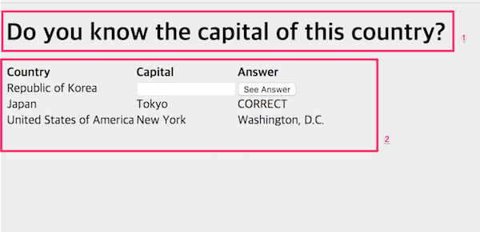 You have to add a title(1) and a table first. In detail,- (10pt) Title
- Your title’s font-size should be bigger than other texts below.
- (10pt) Shape of table
- The table should have 3 columns.
- (10pt) Table header
- Each of the 3 columns has its own header, named ‘Country’, ‘Capital’, and ‘Answer’, respectively.
- (10pt) Row for entering answer
- The second row (the row below the header) should contain the example country, the text input, and the ‘See Answer’ button.
- (10pt) Row for correct past entry
- The third row should contain a correct entry example. Since Tokyo is the capital of Japan, we display ‘CORRECT’ in the answer column.
- (10pt) Row for incorrect past entry
- The fourth row should contain an incorrect entry example. Since New York is not the capital of the USA, we display the correct answer (Washington, D.C.) in the answer column.
STEP2: Styling components-1 (50pt)
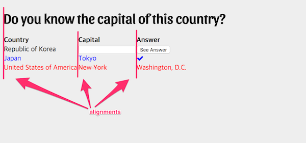 Let’s give some style to components so their functions are easily recognizable. In detail,- (10pt) Header
- Make text in the table header bolder than other texts in table’s body.
- (10pt) Correct past entry
- (5pt) Change the font-color of correct entry into blue.
- (5pt) Change ‘CORRECT’ in answer column to a check icon. You can easily insert icons by using libraries like FontAwesome, without inserting images. FontAwesome is included in index.html. Check this link to learn how to use it.
- (10pt) Incorrect past entry
- (5pt) Change the font-color of an incorrect entry into red.
- (5pt) Strikethrough the wrong answer (New York in the example).
- (20pt) Alignment
- All elements in a column should be left aligned.
- The title and the first column should be left aligned.
STEP3: Styling components-2 (50pt)
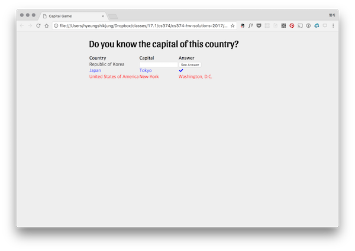- (10pt) Use web fonts for the title.
- With web fonts, you can load any type of font into your web page.
- Google Fonts is one of the most popular services. If you are new to it, this tutorial and article will be helpful.
- (10pt) Align elements to the center.
- Currently our elements are at the left of the page - let’s move them to the center as shown in the screenshot above.
- It’s okay to wrap the content in a fixed width div. However, make sure that the title is displayed in one line (no line break).
- Aligning content to the center is a deep topic indeed. Here are some recommended articles from course staff.
- (30pt) Apply styles to the table 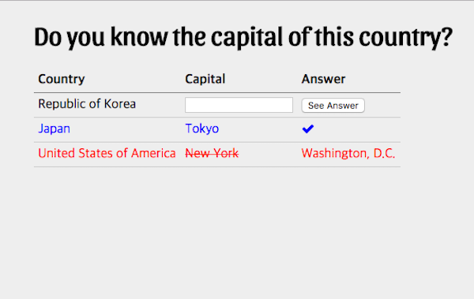 Let’s make our table look more like a table.
- (15pt) Add horizontal borders
- (5pt) No border for the uppermost border (above the header).
- (5pt) Style is up to you, but there shouldn’t be any vertical borders between borders.
- (5pt) The borders should not be separated(You will find a CSS property called border-collapse(link) useful).
- (10pt) Add paddings
- Add 5px of padding to every cell in the table.
- (5pt) Apply different styles to the border below the header and other borders.
- In the example above, the border below the header is set to '1px solid black’, while other borders are ‘1px solid #cccccc'
- You may apply different border-style of your own. Please show your aesthetic sense.
Intro
In the last assignment, we built a layout of the capital quiz game. For PR2, we will implement interactive features of our game using JavaScript based on the the layout you built.Where to start from?
We provide you with the starter kit, pr2.zip. It includes- jquery/: the code for jQuery and jQuery UI, the JavaScript libraries you will be using for this assignment.
- country_capital_pairs.js: an array of javascript objects that contains a pair of country and its capital.
- capital_game.css: a skeleton file for your user interface CSS code.
- capital_game.jsa skeleton file for your user interface JS code.
- index.html a skeleton file for your user interface HTML code.
How to submit?
- Compress your code into studentnumber_pr2.zip. Please do not create any subfolders.
- Then upload the zip file to the course KLMS until the due date stated above.
- Late policy will be applied.
How to test my code before submitting it?
- TAs will evaluate your code on the latest stable version(57) of Chrome for OSX. We expect no browser compatibility issue in this assignment (we're not making a cutting-edge web application), but please test your code in your platform's Chrome before submission.
- If there is a browser issue between Chrome versions in different OS, TAs will follow the behavior in the student’s OS. However, please make sure that you are not using any custom stylesheet in your Chrome.
- There were many questions about using the latest features of JavaScript / CSS in programming assignments. It’s okay to use those cool features if they are supported by Chrome 57. If you are not sure about the support status of the feature you wish to use, check http://caniuse.com/.
Where to ask question?
- If you have questions about this assignment, please post it on our Piazza (in 'pr2' folder as ‘question’). TA will answer within a day.
- If you believe your question should be kept private, please send email to hyeungshik.jung@kaist.ac.kr
OK, what should I do?
Your job is to implement basic functionalities of the capital quiz game - Choosing a new question, checking whether the user’s answer is correct, showing history, etc.Step 1: Prepare a new question (45pt)
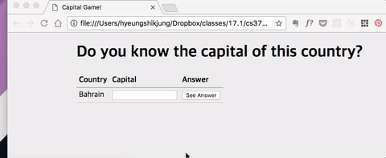 In the previous programming assignment, we placed an example question and an example correct/wrong entry. In this step, you have to display a new question every time (1) when the page is loaded, or (2) the user clicks the ‘See Answer’ button. In detail,- (15pt) Adding id to elements
- (5pt) The td containing the question(the country's name) should have an id of "pr2__question" (Note that there are two underscores).
- (5pt) The input for typing answer should have an id of "pr2__answer".
- (5pt) The button for submitting answer should have an id of "pr2__submit".
- (5pt) Empty history
- There should be no example entries when the page is refreshed.
- (10pt) Random first question
- Every time the page is loaded, the initial question should be randomly selected.
- The input element for typing answer should get focus so the user can start typing as soon as the page is loaded.
- (15pt) Behaviour of the ‘See Answer’ button
- (5pt) New randomly selected question should be prompted.
- (5pt) The input should be cleared.
- (5pt) The input should get focus again.
-
When the ‘See Answer’ button is clicked,
Step 2: Maintain the history of previous questions (40pt)
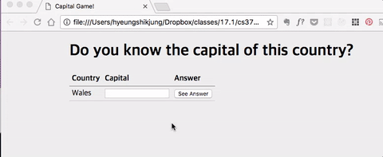 Update your code so that when the user presses the ‘See Answer’ button, the list of previous answers gets populated with each of the user's entries. In detail,- (10pt) Pile up previous questions and answers
- The entry that was submitted last appears at the top of the list.
- (15pt) Style a correct entry
- When deciding whether an entry is correct, the program only performs exact matches: differences in capitalization, blanks, etc. should be reported as incorrect answer.
- The color of the correct entry should be blue.
- There should be a check icon at the Answer column of a correct entry.
- (15pt) Style an incorrect entry
- The color of the correct entry should be red.
- Strikethrough the user’s wrong answer.
Step 3: Add autocomplete in answer input (35pt)
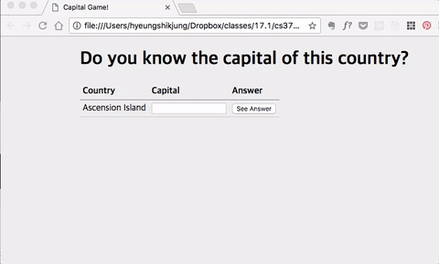 The input field accepts the user's guess. Use jQuery UI to make this field an autocomplete widget. In detail,- (15pt) Start of autocomplete
- (10pt) It should suggest the capitals in the ‘country_capital_pairs.js’ that contain letters that the user has typed so far.
- (5pt) The autocomplete widget should pop up when user enters at least two characters.
- (20pt) Selecting behaviors When the user selects a suggestion from the autocomplete widget by clicking or hitting the ‘Enter’ key, it should behave the same as clicking on the ‘See Answer’ button. In detail,
- (5pt) New randomly selected question should be prompted.
- (5pt) The input should be cleared.
- (5pt) The input should get focus again.
- (5pt) Add the entry to the previous entry list.
Step 4: Add filtering and deletion of past entries (60pt)
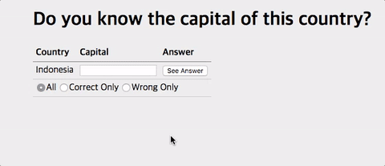 How about showing correct or wrong past entries only? Let’s add a filter for past entries. In detail,- (20pt) Add option elements for filter selection
- (5pt) Add 3 option elements: ‘All’ , ‘Correct’, and ‘Wrong Only’. Their type should be radio.
- (5pt) They should be placed in a row.
- (5pt) They should be placed below the row with question and input.
- (5pt) The default option is ‘All’.
- (25pt) Filter selection behavior
- (15pt) When the user selects an option, the history should be updated accordingly (For the ‘All’ option, every past entry should be displayed. For the ‘correct’ option, every correct past entry should be displayed).
- (10pt) What if the user submits a correct answer when ‘Wrong Only’ is selected, or vice versa? In this case, change the filter to ‘All’ automatically so the user receives correct feedback.
- (15pt) Support deletion of a past entry
- (5pt) Add a delete button to the ‘Answer’ column of past entries.
- (10pt) When the button is clicked, the row that contains the clicked button is deleted. After deletion, it should not be seen even if the user selects a new filter.
Intro
In the last assignment, our capital game had a few interactive features like autocomplete, grading, and filtering. In this assignment, we will make our capital game communicate with the web, as well as make it safer from errors.
Where to start from?
We will provide you with the starter kit, pr3.zip. It includes
jquery/: the code for jQuery and jQuery UI: these are JavaScript libraries you will be using for this assignment.capital_game.css: skeleton CSS code.capital_game.js: skeleton JavaScript code.index.html: skeleton HTML code.
How to submit?
- Compress your code into
studentnumber_pr3.zip. Please do not create any subfolders. - Then upload the zip file to the course KLMS until the due date stated above.
- Late policy will be applied.
How to test my code before submitting it?
- TAs will evaluate your code on the latest stable version(57) of Chrome for macOS. We expect no browser compatibility issue in this assignment (we're not making a cutting-edge web application), but please test your code in your platform's Chrome before submission.
- If there is a browser issue between Chrome versions in different OS, TAs will follow the behavior in the student’s OS. However, please make sure that you are not using any custom stylesheet in your Chrome.
- There were many questions about using the latest features of JavaScript / CSS in programming assignments. It’s okay to use those cool features if they are supported by Chrome 57. If you are not sure about the support status of the feature you wish to use, check http://caniuse.com/.
Where to ask questions?
- If you have questions about this assignment, please post it on Piazza (in 'pr3' folder as ‘question’). TA will answer within a day.
- If you believe your question should be kept private, please send email to hyeungshik.jung@kaist.ac.kr.
OK, what should I do?
Step1: Load country and capital data from the web (30pt)
In the last assignment, the list of countries and their capitals was provided in country_capital_pairs.js, a JavaScript file which stored the list in a pairs variable. In this assignment, let's load the list from the csv file on the web. In other words, instead of loading from a file, load it from the web.
- Retrieve the csv file from the link by making a request using jQuery.ajax and you should get a response.
- Parse the response and save the parsed data to the
window.pairsvariable. The result should be in the same format as thepairsvariable from the last assignment - a JavaScript array with objects including two keys (country, capital). - TAs will evaluate the parsed result by inspecting the
window.pairsvariable in the browser console.
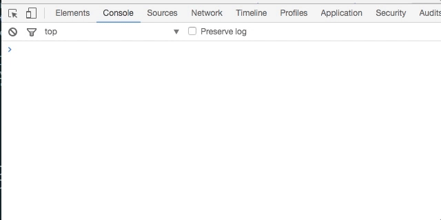
Step2: Store history using Firebase (50pt)
Build every component of PR2 - autocomplete, grading, filter, etc. However, for this time, store past entries to Firebase so they are not lost even when the user refreshes the webpage.
- (40pt) Please follow every specification of PR2 for implementation, including elements'
ids like pr2__submit . - (10pt) Add a Clear button on the row below option elements. Set its
idto pr3__clear . When the ‘clear’ button is clicked, all the past entries are deleted. - It’s optional to store the current question in Firebase, meaning that it can be changed when the page is refreshed.
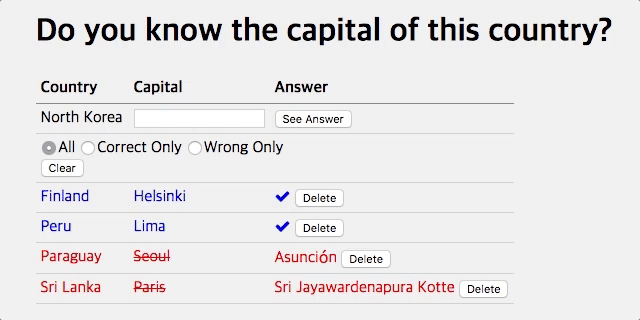
Step3: Show the location of countries (50pt)
How about adding a map showing the location of countries?
- (10pt) Add a map above the table using Google Maps Embed API. Please read instructions and acquire your API key.
- (5pt) Set the
widthto 100% andheightto 400px . - (5pt) Set the
maptypeto satellite by referring to the Devloper Guide. - (10pt) Show the location of the country in the current question using the
qparameter in theiframe'ssrc. If the game is asking the capital of Easter Island, includeq=Easter Islandin thesrc. - (10pt) When the user clicks on any country name in past entries or the question, update the map accordingly.
- (10pt) When the user hovers on any country name, change the style of mouse
cursorto pointer to provide clicking affordance.

Step4: Add Undo / Redo (100pt)
Let's add the Undo / Redo feature to provide better Safety in our capital game. The history for Undo / Redo should be stored in the Firebase database, too. The history for Undo / Redo is reset after the page is refreshed (Updated in May 11)
Undo (40pt)
- (20pt) Add an Undo button that, each time it is pressed, goes one step backwards in history. For example, if the user clicks Undo after entering an answer, the answer should be deleted.
- (10pt) The Undo button should have an
idof pr3__undo. - (10pt) The Undo button should only be enabled when that action is possible. For example, Undo should be disabled when you start the game. Use
disabledattribute to disable button. - The Undo button can also undo the ‘clear’ action.
Redo (40pt)
- (20pt) Add a Redo button that plays the undo stack forward.
- (10pt) The Redo button should have an
idof pr3__redo. - (10pt) The Redo button should only be enabled when that action is possible. For example, Redo should be disabled when you start the game. Use
disabledattribute to disable button.
Keyboard shortcuts for Undo and Redo (20pt)
- (10pt) When the user presses
Ctrl + Z, the game should behave the same as the Undo button click. - (10pt) When the user presses
Ctrl + Y, the game should behave the same as the Redo button click.
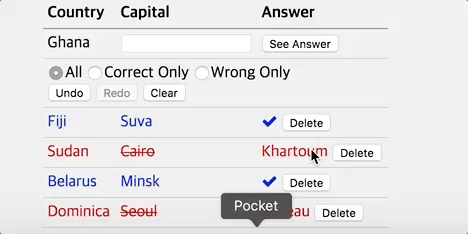